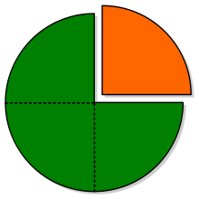
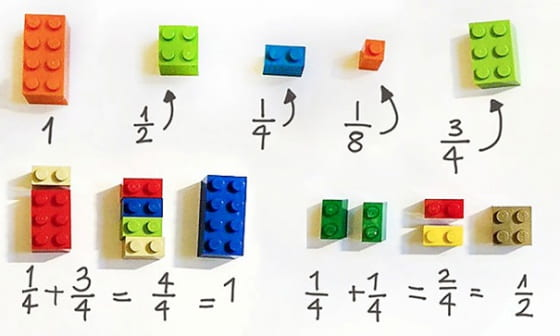
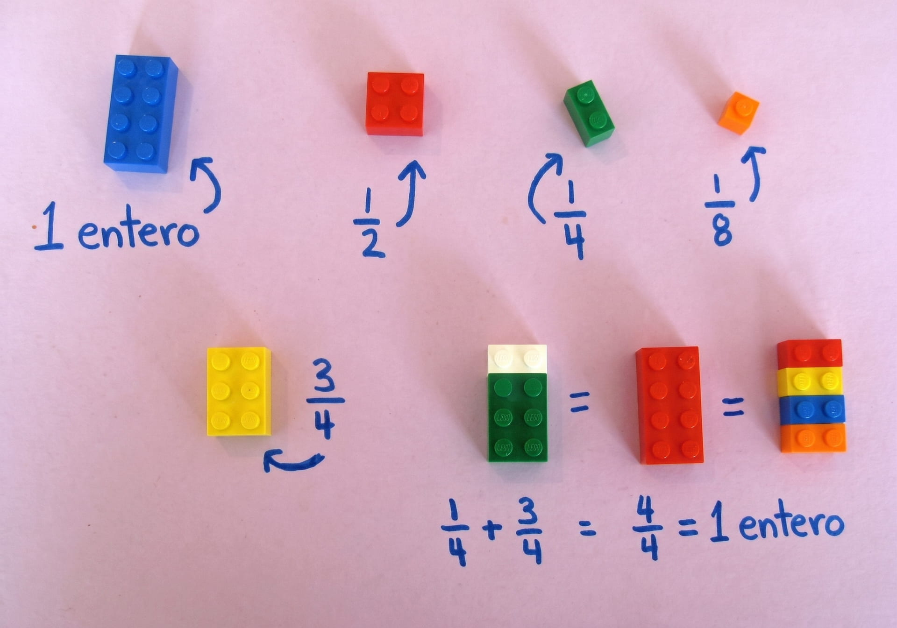
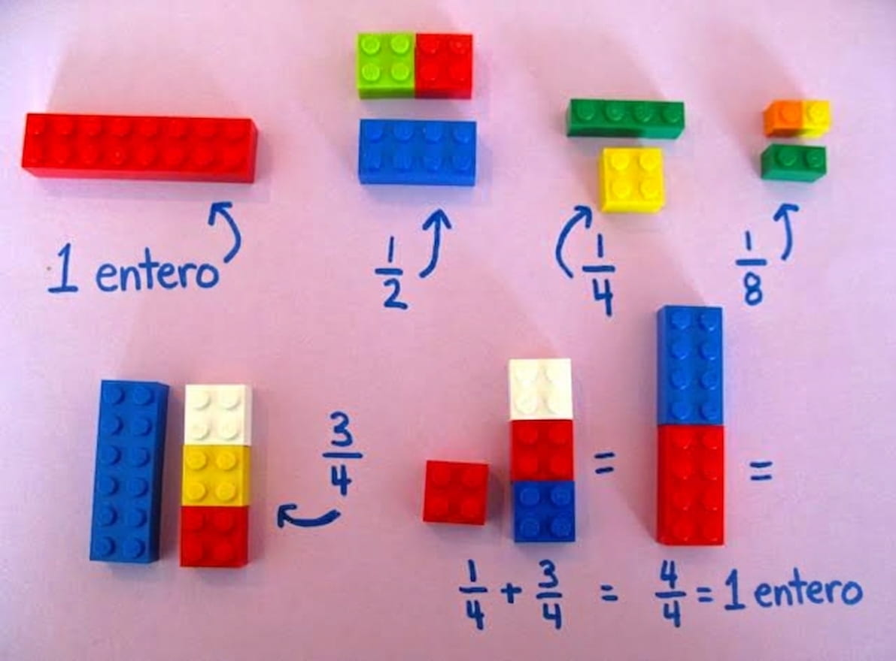
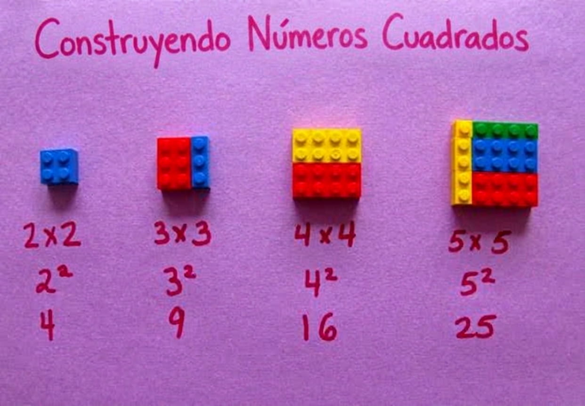

Concepto de número fraccionario o fracción
En los últimos años se habla mucho del proceso de independencia de Cataluña, de cómo se fraccionaría España o de que solo una fracción de la población está a favor de dicho proceso. Precisamente el concepto de fracción da nombre a un procedimiento basado en dividir (fraccionar) algo en partes.

| En matemáticas, cuando queremos expresar una parte de un total recurrimos a los números fraccionarios o fracciones. |
Los elementos que forman la fracción, y que se escriben separados por una raya horizontal, son:
- El denominador. Es el número de abajo, indica el número de partes iguales en que se divide la unidad.
- El numerador. Es el número de arriba, indica la cantidad de esas partes que se toman.
¿Cómo leemos las fracciones?
¿Cómo leemos las fracciones?
Primero se lee el numerador como cualquier número y a continuación, el denominador de la siguiente manera:
-
Si es 2, 3, 4, 5, 6, 7, 8, 9 se lee: medios, tercios, cuartos, quintos, sextos, séptimos, octavos y novenos.
-
Si es 10 se lee décimos.
-
Si es mayor que 10 se lee el número añadiendo la terminación -avos.
Así, un minuto es un sesentavo de hora y se representa por \(\dfrac{1}{60}\). Si tomamos cinco minutos, se lee como cinco sesentavos de hora, y se representa por \(\dfrac{5}{60}\).
Números racionales \(\mathds{Q}\)
Empleamos los números fraccionarios o fracciones cuando queremos expresar una parte de un total.
Una fracción también puede entenderse como el cociente de dos números. Es decir, es una división sin realizar donde el numerador es el dividendo y el denominador el divisor.
| Todo número que pueda ponerse en forma de fracción se dice que es un número racional. |
Cómo saber el valor aproximado de una fracción y comparar y ordenar fracciones.
Para saber cuál es el valor de una fracción deberíamos realizar esa división. Sin embargo, con la simple observación del numerador y del denominador podemos hacernos una idea de ese valor:
- Si el numerador es más pequeño que el denominador, entonces la fracción vale menos de 1.
- Cuanto más cerca esté el numerador del denominador más cerca estará el valor de 1.
- Si el numerador es mayor que el denominador, entonces la fracción vale más de 1.
En general, su valor será más grande cuanto mayor tenga el numerador y será más pequeño cuanto mayor tenga el denominador.
Practica.
Ordena las fracciones siguiendo las directrices anteriores.
Ejemplo
María se ha comido \(3\) partes de un bizcocho que se había dividido previamente en \(8\) partes iguales.
-
¿Qué fracción representa lo que se ha comido María?
-
¿Y la parte de bizcocho que ha sobrado?
-
Representa cada una de las fracciones anteriores mediante un dibujo.
Importante
| Los números fraccionarios son números racionales. |
Apolo XI
Seguro que recuerdas que el primer viaje del hombre a la Luna fue realizado por la nave espacial Apolo XI, siendo sus tripulantes los astronautas Neil Armstrong, Michael Collins y Edwin Aldrin.
El lanzamiento se realizó el día 16 de julio de 1969, y la vuelta a la Tierra tuvo lugar el 24 de julio. En pocas palabras, el viaje consistió en ir de la Tierra a la Luna, alunizar en nuestro satélite, y el viaje de regreso de la Luna a la Tierra.
La mitad del tiempo de este viaje correspondió a la ida. Del resto del tiempo, una cuarta parte fue la que estuvo el módulo espacial en la superficie de la Luna.
¿Qué fracción del viaje total correspondió al regreso y a la estancia en la Luna? ¿Cuántos días duró cada una de las fases?
Curiosidad
LEGO es una empresa y marca de juguetes danesa reconocida principalmente por sus bloques de plástico que se conectan entre sí y permiten hacer construcciones.
Dada su popularidad, su fácil manejo y su atractivo visual, se pueden utilizar para ejemplificar situaciones matemáticas, tal y como se recoge en estas imágenes:




Te recomendamos el siguiente vídeo. Aunque las pocas palabras que aparecen están en inglés, solo la exposición te puede ayudar a comprender el concepto de fracciones equivalentes.